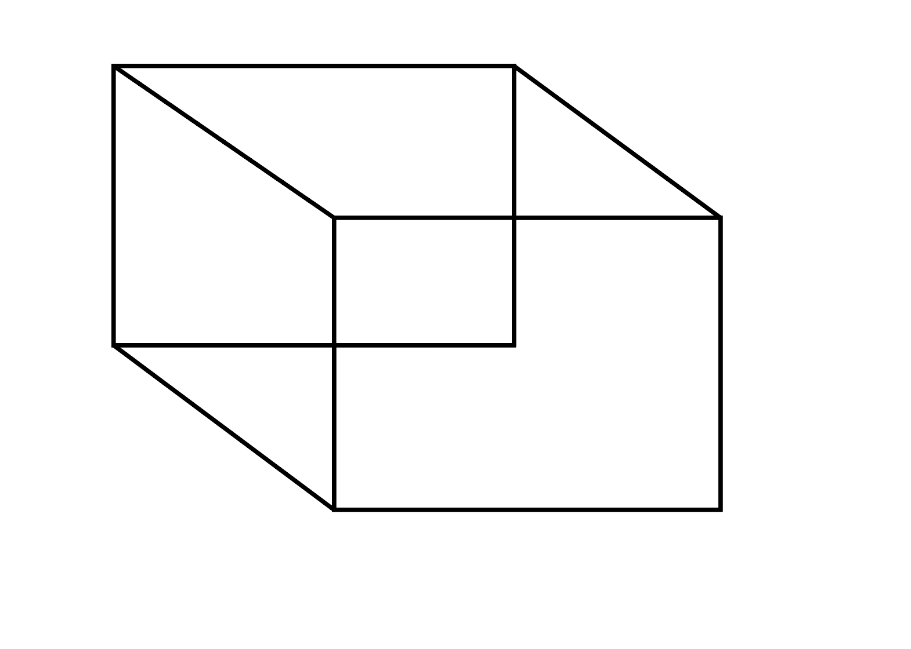

- Open Illustrator
- Select Custom Page
- Press "M" on the keyboard
- Click on the canvas
- Type in the dimensions for the square (1.5x1.5)
- Make another square with the exact same dimensions as the previous
- With that square selected, press the forward slash button on the keyboard
- Move that square so that it's center is aligned with the first square's bottom right corner
- Select the Pen tool
- Click the upper right corner of that square and connect it with the corresponding corner
- Click the corner where you started to complete the line ( a small circle will appear near cursor)
- Repeat this process for each corner
- Select the pointer tool and click anwhere on the canvas
- Email to astacy4@masonlive.gmu.edu
Original Drawing 